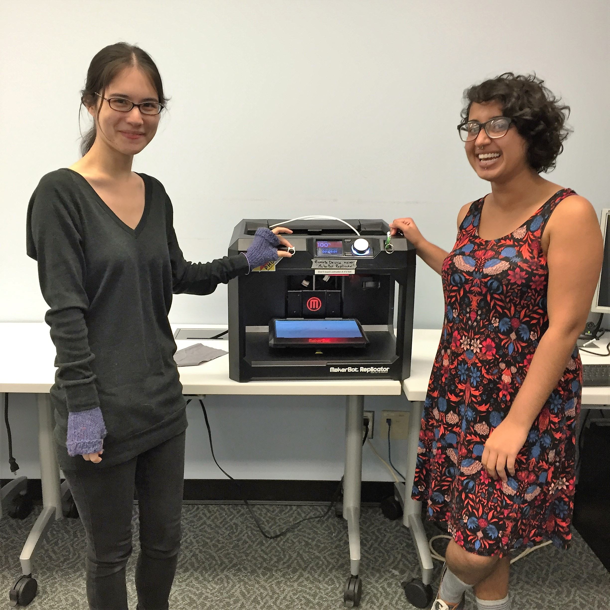

Open Hours for Winter 2018:
Mon: 12-4
Tue: 12-7
Wed: 10-4
Thur: 2-6
*Check our Calendar for updates on our Open Hours, programming, and reservations.

Get Involved with Studio307
Here are a few of the ways you can get involved with Studio307 (including some really specific areas where we need help):
- Visit during open hours. Studio307 is open to all iSchool students and faculty during open hours. Stop by, talk to staff, use the equipment, or just say hi.
- Attend a workshop or event. Get your feet wet at a scheduled event or workshop. 307 has its own programming, but you can find iSkills and other Faculty of Information events here as well. Check the calendar for details.
- Fix this website. It's pretty basic. If you feel like flexing your chops making this thing more usable and fancy, send a pitch on how you'd do it to semaphorestudio307@gmail.com.
- Design some documentation. We could do better at wayfinding and technical documentation in the space. Some examples might be a poster explaining the basics of using the 3D scanner or an easy-to-follow booklet on getting started with the sewing machine. If this is a skill you'd like to practice, send your project pitch to semaphorestudio307@gmail.com.
- Host a workshop or event. Got a hands-on skill you want to share? A prototype you want to demo or discuss? Or a relevant group or event you want to host? Let's do it. Get in touch at semaphorestudio307@gmail.com. Small amounts of funding, with sufficient notice, may be available.
- Guidelines for pitching a program can be found here, if you're stuck!
The about us stuff that's on every page....
Studio307 is a student-run studio workspace within the Faculty of Information at the University of Toronto. It's located in Rm 307 of the Claude T. Bissell Building (140 St. George Street) and supported by Semaphore, TechFund, the Inforum and student volunteers and staff.